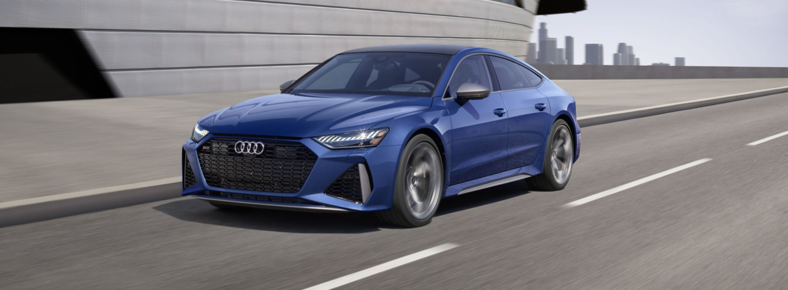
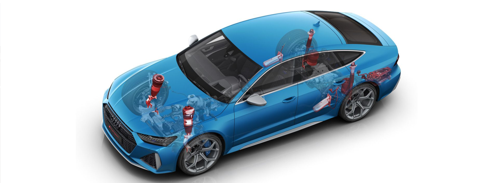
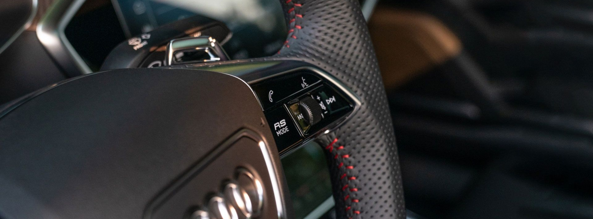
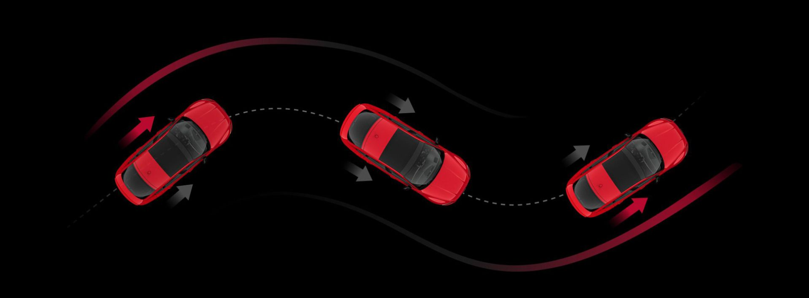
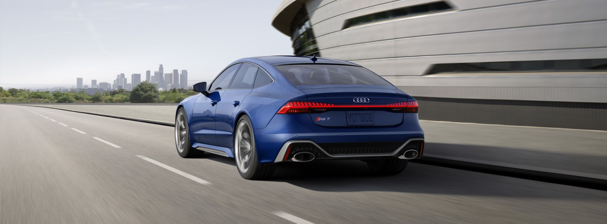

8-ступенчатый Типтроник. Благодаря 8-ступенчатой
коробке передач Tiptronic функция launch control и
оптимизированное время переключения обеспечивают быстрый старт
в любых условиях, а подрулевые переключатели обеспечивают еще
большее сцепление.

Адаптивная пневмоподвеска с RS-настройкой. Чтобы
подчеркнуть точность и острые ощущения от вождения,
регулируемое демпфирование в системе пневмоподвески было
тщательно настроено специально для соответствия
характеристикам Audi RS 7.

Кнопка режима RS. Управляйте коробкой передач,
двигателем, подвеской и рулевым управлением с помощью кнопки
режима RS, которая включает две предустановки, удобно
расположенные на рулевом колесе.

Задний дифференциал quattro sport. Благодаря
возможности передачи мощности на соответствующее колесо при
прохождении поворотов, доступный на Audi RS 7 performance
задний дифференциал Sport quattro помогает сохранять контроль
при прохождении поворота.

Спортивный выхлоп RS. Audi RS 7 performance оснащен
выхлопной системой RS в комплекте с двумя овальными черными
патрубками.